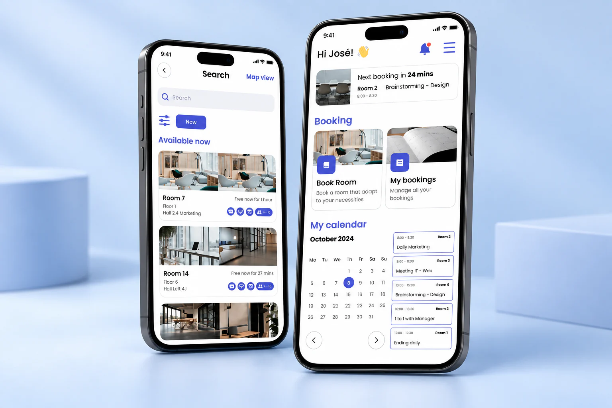

Prioritise the booking task
The interface centres on finding a room and arranging a booking.
Room Booking
A room-booking interface designed for mobile and kiosk screens, bringing the same task to two different contexts of use.

The design brings room information and booking controls into an experience that needs to work on both a personal device and a shared screen.
The interface centres on finding a room and arranging a booking.
Mobile and kiosk layouts share an identity while adapting the composition to the available screen space.
The project explores how a consistent interface can support the same action across different formats.